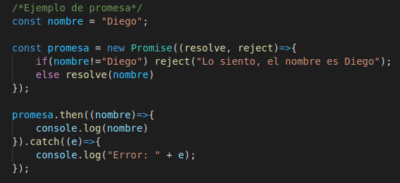
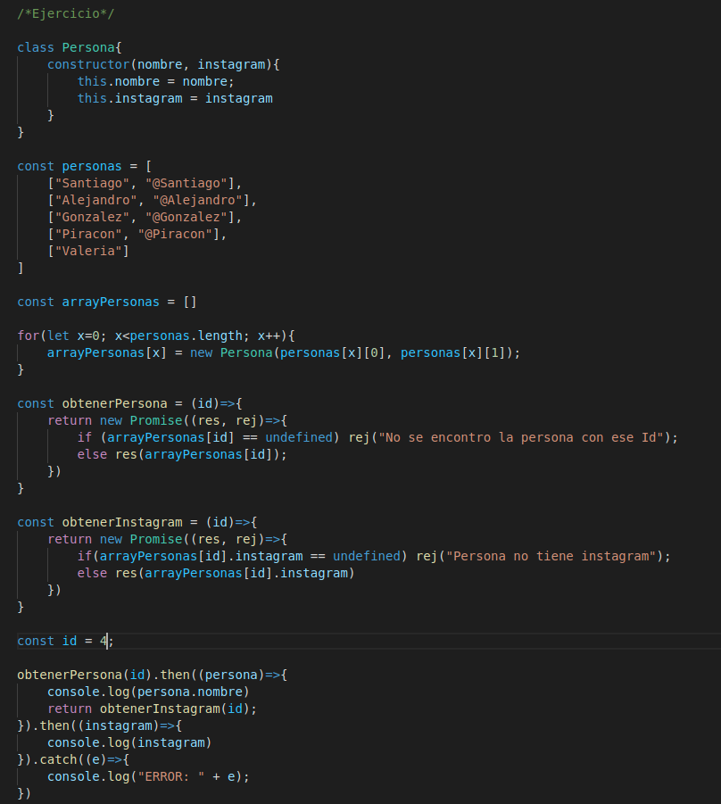

Lección 10 - Promesas
Definición: Las promesas son objetos que reciben dos callbacks como parametros, el callback resolve y el callback reject
- resolve: Callback que se ejecuta cuando no hay errores.
- reject: Callback que se ejecuta si hay problema.
- then(callback): then es otra función de la promesa con la que podemos acceder a los valores del resolve.
Ejemplo de Promesa:

Ejercicio con Promesas:
